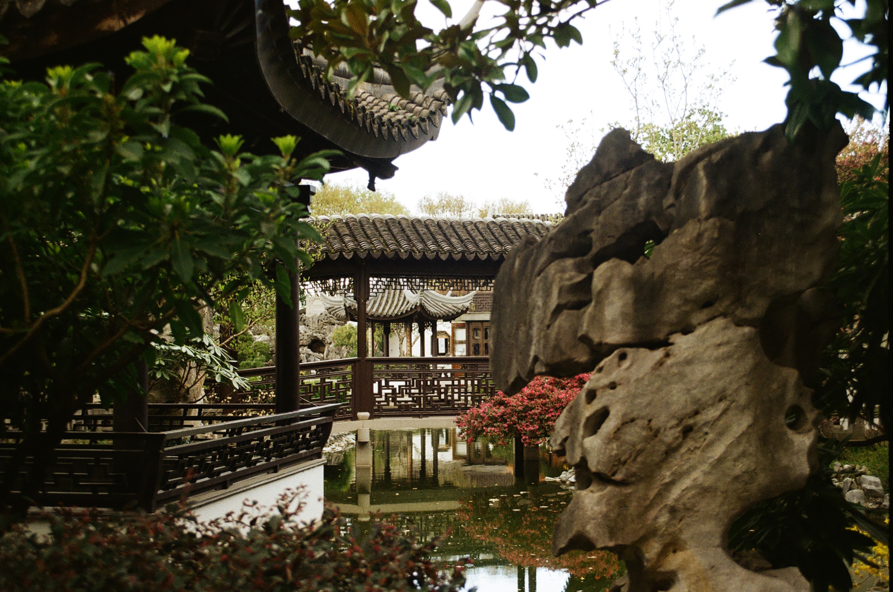
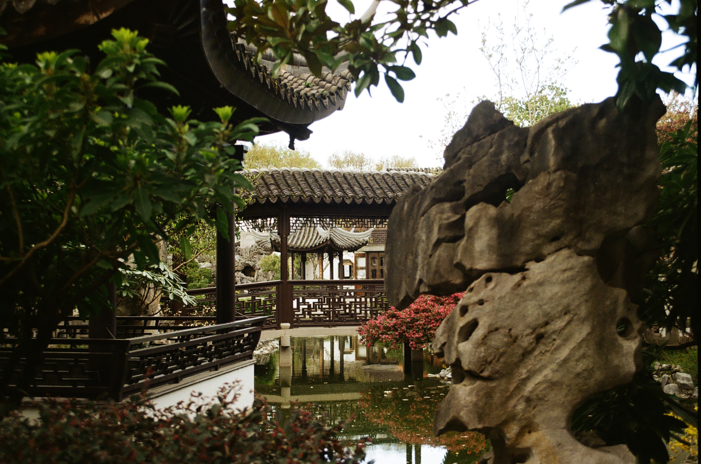
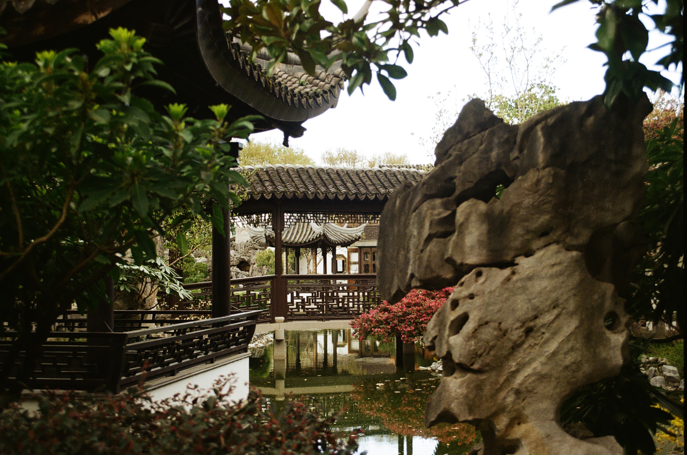

35mm Photos:


 



For anyone interested, I typically shoot color film on an Olympus OM-10, and I've taken some pretty cool photos with my Polaroid SX-70 as well. In the future I'd like to shoot more B&W, and maybe even start developing it myself. I also have some ideas in mind about shooting B&W infrared film, but I'm keeping those a secret for now.
Below are some of the results I feel are worth sharing.
